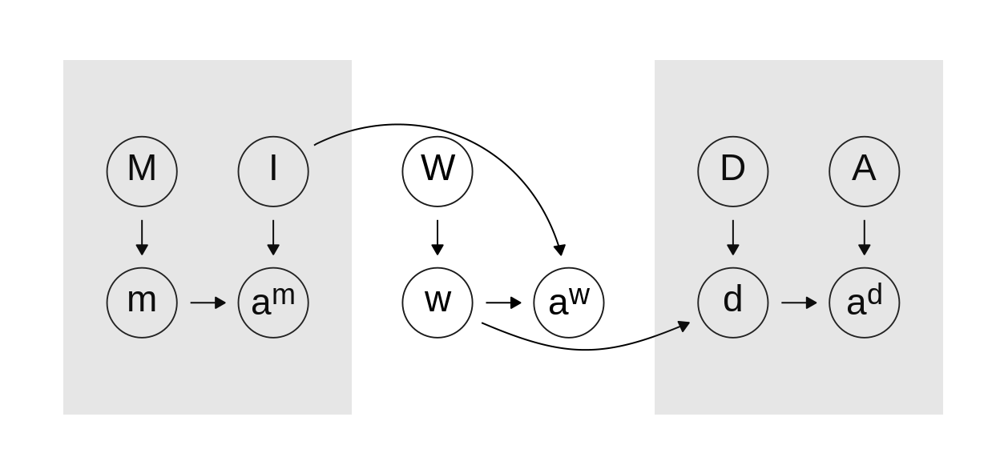

Welcome
This is the Web site for the book Research Design: Declare, Diagnose, Redesign by Graeme Blair, Jasper Cooper, Alexander Coppock, and Macartan Humphreys, under advance contract with Princeton University Press. Please treat with caution. Your comments are very welcome.
dag <-
dagify(aw ~ w + I,
m ~ M,
am ~ m + I,
d ~ D + w,
ad ~ A + d,
w ~ W)
dag_base <- tidy_dagitty(dag) %>%
select(name, direction, to, circular) %>%
as_tibble
nodes_df <-
tibble(
name = c("M", "I", "D", "A", "m", "am", "aw", "d", "ad", "w", "W"),
label = c("M", "I", "D", "A", "m", "a<sup>m</sup>", "a<sup>w</sup>", "d", "a<sup>d</sup>", "w", "W"),
long_label = c("Theoretical<br>causal model", "Inquiry", "Data<br>strategy", "Answer<br>strategy", "Model<br>draw", "Theoretical<br>answer", "True answer", "Realized<br>data", "Empirical<br>answer", "Real<br>world", "True<br>causal model"),
lbl_direction = c("N", "N", "N", "N", "S", "S", "S", "S", "S", "S", "N"),
x = c(1, 2, 5.5, 6.5, 1, 2, 4.25, 5.5, 6.5, 3.25, 3.25),
y = c(3, 3, 3, 3, 2, 2, 2, 2, 2, 2, 3)
)
endnodes_df <-
nodes_df %>%
transmute(to = name, xend = x, yend = y)
gg_df <-
dag_base %>%
left_join(nodes_df, by = "name") %>%
left_join(endnodes_df, by = "to")
gg_df <-
gg_df %>%
mutate(arced1 = (name == "w" & to == "d"),
arced2 = (name == "I" & to == "aw")) %>%
arrange(name)
rect_df <-
tibble(
xmin = c(.4, 4.9),
xmax = c(2.6, 7.1),
ymin = c(1.15, 1.15),
ymax = c(3.85, 3.85)
)
g <-
ggplot(data = filter(gg_df, !arced1 & !arced2), aes(
x = x,
y = y,
xend = xend,
yend = yend
)) +
geom_point(color = gray(.1), fill = NA, size = 15, stroke = 0.5, pch = 1) +
geom_dag_edges(edge_width = 0.35) +
geom_dag_edges_arc(data = filter(gg_df, arced1), curvature = -0.28, edge_width = 0.35) +
geom_dag_edges_arc(data = filter(gg_df, arced2), curvature = .7, edge_width = 0.35) +
geom_richtext(color = "black",
parse = TRUE,
aes(label = label),
fill = NA,
label.color = NA,
label.padding = grid::unit(rep(0, 4), "pt"),
size = 4) +
geom_richtext(
aes(y = y + if_else(lbl_direction == "N", 0.4, -0.4),
vjust = if_else(lbl_direction == "N", "bottom", "top"),
label = long_label),
color = gray(0.5),
parse = TRUE,
fill = NA,
label.color = NA,
label.padding = grid::unit(rep(0, 4), "pt"),
size = 4) +
coord_fixed(ylim = c(1.15, 4)) +
geom_rect(data = rect_df, aes(x = NULL, y = NULL,
xend = NULL, yend = NULL,
xmin = xmin, xmax = xmax, ymin = ymin, ymax = ymax),
alpha = 0.15) +
annotate("text", x = 1.5, y = 4.05, label = "Theory") +
annotate("text", x = 6, y = 4.05, label = "Empirics") +
annotate("text", x = 3.75, y = 4.05, label = "Reality") +
# annotate("text", x = 3, y = 1.6, label = "Truth") +
theme_dag()## Warning: Ignoring unknown parameters: parse
## Warning: Ignoring unknown parameters: parse
g